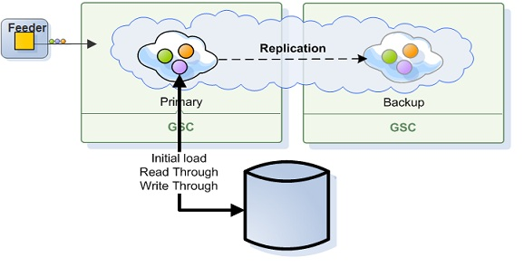
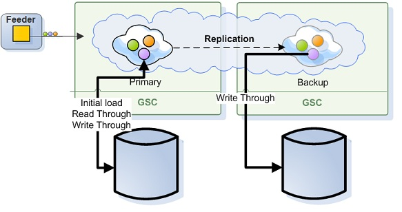

Recovery is a process that happens on space instance startup or relocation and used to synchronize the space instance data with another space instance in its replication group.
When space instance is the first to start and doesn't have another space instance to recover from - it's data is loaded from the External Data Source if such was defined, otherwise the space will start empty.
Recovery process has two phases: a snapshot phase and a completion phase.
All space objects are copied from to the target to the source in batches. This is done concurrently by multiple threads. In case the recovery process takes a lot of time, the following configuration can be tuned to decrease the recovery time.
| Property | Description | Default Value |
|---|---|---|
| cluster-config.groups.group.repl-policy.recovery-chunk-size | Integer value. Defines how many operations are recovered is a single batch | 200 |
| cluster-config.groups.group.repl-policy.recovery-thread-pool-size | Integer value. Defines how many threads are recovering the data during the snapshot process . | 4 |
Operations that were performed on the source space during the snapshot phase are not a part of the recovered snapshot, so they are accumulated in the source space instance redo-log and are sent to the target space once the snapshot phase is finished via replication. In case a limited redo log is used the following property defines the maximum size of the redo log during recovery:
| Property | Description | Default Value |
|---|---|---|
| cluster-config.groups.group.repl-policy.redo-log-recovery-capacity | Integer value. Defines the maximum size of the redo log kept on the source space during recovery. | 5000000 |
For more info refer to Controlling the Replication Redo Log.
Completion phase is finished according to the consistency requirements of the replication type.
For more info refer to Synchronous Replication Behavior During Recovery and Asynchronous Replication Behavior During Recovery.
Once the recovery process is complete, a full report including the total amount of recovered space objects and notify registrations, and their class types, is logged. During the recovery process, the source space is available, and the target space is unavailable to clients.
@SpaceClass (replicate=true) decoration (turned on only when partial replication is enabled).In primary-backup topologies the recovering space instance is always a backup, primary space instances don't recover their data from other spaces. The recovering backup space instance connects to its primary space instance and recovers its data only from it. If there are other space instances in the same replication group, they don't replicate their data to the recovered space instance.
Primary and Backup space instances use the same database to stored their data. The space is the system of record. The data is usually persisted through the Mirror service.
Which data is recovered depends on the space caching policy.
There is special handling for Transient Entries (persist=false), since they can't be persisted - they are always recovered from the primary.
A backup instance recovers all its data from the primary instance - data is not loaded from the database. This is done so that any data changes on the primary during the recovery process are consistent on the backup once recovery finishes.
A backup instance recovers only transient entries from the primary instance. Data is not loaded from the database.

Since primary and backup use the same database instance, the data will be loaded to the backup on demand.
If a backup space instance recovery process fails, it is handled in the following way: If the primary space is unavailable for some reason - recovery will be retried until one of the following happens:
Any other failure - SpaceMemoryShortageException, Database not available etc. is retried 3 times before failing.
In active-active topologies the recovering space instance connects to one of the space instances in its replication group and recovers all the data from it. If there are other space instances in the same replication group, after recovery other they connect the recovered space instance and replicate their data as well.
Replicated space instances keep and manage their data in a separate databases.

With this scenario:
For further info and configuration options see Distributed Databases
If the recovery process fails, it is retried 3 times before failing.